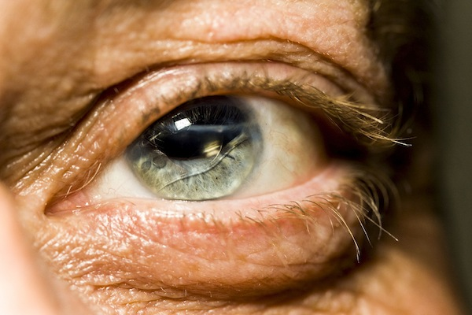
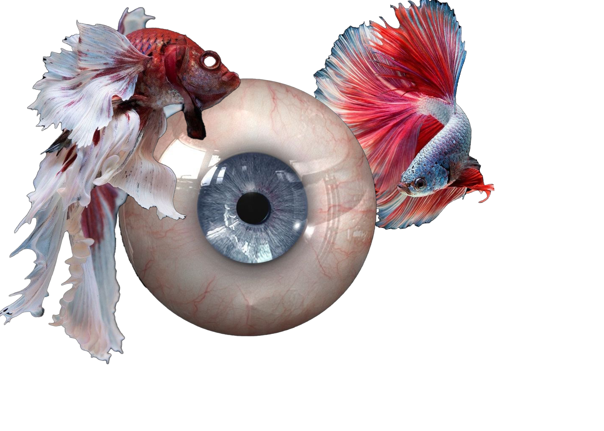

The fragility of the human eye does not diminish the importance this anatomical structue holds.
Our skin may wrinkle as we age, but this feaure, delicate enough to lose its function by viewing the star that sustains our planet, maintains its youth. The iris encapsulates individuality through distinct coloring throughout the entirety of our lives, and allows us to experience such a visually stimulating world.

